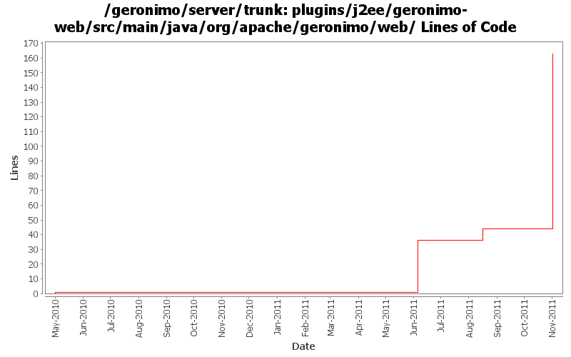

[root]/plugins/j2ee/geronimo-web/src/main/java/org/apache/geronimo/web
 assembler
(1 files, 91 lines)
assembler
(1 files, 91 lines)
 info
(13 files, 484 lines)
info
(13 files, 484 lines)
 security
(6 files, 1253 lines)
security
(6 files, 1253 lines)

| Author | Changes | Lines of Code | Lines per Change |
|---|---|---|---|
| xuhaihong | 11 (100.0%) | 169 (100.0%) | 15.3 |
GERONIMO-6204 Decouple OpenWebBeans from web container
123 lines of code changed in 5 files:
GERONIMO-6145 Factory info should not be shared among those web jsf applications in one EAR package
0 lines of code changed in 1 file:
GERONIMO-5743 ServletContext.getRealPath() returns null
8 lines of code changed in 1 file:
a. Update the WebAttributeNames in the geronimo-web module to WebApplicationConstants
b. Update the WebApplicationConstants in the geronimo-wab module to WABApplicationConstants
36 lines of code changed in 2 files:
Miss some changes in the last commit
1 lines of code changed in 1 file:
a. Calculate web permissions while starting the web module to support setServletSecurity feature in Servlet 3.0
b. Initial support ServletContainerInitializer, some improvements might be needed, such as use ASM ?
c. Support ORDERED_LIBS ServletContext attribute
1 lines of code changed in 1 file: